Perpustakaan — Go & ReactJS Library Lending System
Pengembangan End-to-End dengan Freebuff AI: Pembuatan Aplikasi REST Go, React SPA, Refaktorisasi Postgres Neon, dan Diagnosa Failure CI/CD Vercel. End-to-End AI-Assisted Engineering: Go REST API, React SPA, Neon PostgreSQL Database Migration, and Vercel CI/CD Troubleshooting with Freebuff AI.
Eksperimen Vibecoding AI Co-Pilot The AI Co-Pilot Experiment
Bisakah instruksi bahasa alami (Natural Language Prompting) dalam Bahasa Indonesia memandu AI coding agent autonomous Freebuff (DeepSeek) dari tahap zero-code scaffolding, refaktorisasi basis data relational ke Neon PostgreSQL serverless, hingga mendiagnosa error --prebuilt pada pipeline GitHub Actions sampai rilis ke Vercel production?
Can natural language prompts in Indonesian guide autonomous AI coding agent Freebuff (DeepSeek) through zero-code project scaffolding, serverless PostgreSQL data layer refactoring on Neon, and active CI/CD build script debugging to a stable production deployment on Vercel?
01. Ikhtisar Proyek & Arsitektur Sistem 01. Executive Project Overview & System Architecture
Studi kasus ini mendokumentasikan pengembangan cepat dari nol, refaktorisasi basis data, dan otomatisasi deployment cloud untuk sistem peminjaman buku Perpustakaan. Berkelanjutan dipandu oleh Freebuff—coding assistant AI berbasis DeepSeek Flash—seluruh lifecycle sistem dirancang melalui interaksi prompt Bahasa Indonesia. This case study documents the rapid end-to-end development, persistence refactoring, and automated cloud deployment of Perpustakaan (a modern Library Lending Management System). Guided by Freebuff—an emerging autonomous AI coding assistant powered by DeepSeek Flash—the project was developed interactively through natural language prompts in Bahasa Indonesia.
Tabel Arsitektur & Teknologi Architecture & Tech Stack Specifications
| Layer | Technology / Tool | Specification & Architectural Role |
|---|---|---|
| AI Agent | Freebuff (DeepSeek Flash) | Autonomous workspace setup, code generation, CI/CD workflow drafting, and deployment error debugging. |
| Backend | Golang (v1.25 standard library) | High-performance REST API routing without heavy third-party framework overhead, JSON / Postgres handlers. |
| Frontend | React + Vite SPA | Responsive single-page application dashboard with category filtering, modal forms, and real-time stock state. |
| Database | PostgreSQL on Neon DB | Serverless cloud PostgreSQL providing transactional integrity for catalog inventory, borrowers, and loans. |
| CI/CD | GitHub Actions (ci.yml) |
Automated code analysis (go vet, unit tests), frontend production build, and Vercel edge deployment. |
| Hosting | Vercel Production Edge | Zero-configuration cloud edge deployment with server-side build execution. |
02. Alur Pengembangan & DevOps Guided by Freebuff AI 02. Step-by-Step AI Vibe Coding & DevOps Journey
1. Inisialisasi Prompt 1. Prompting & Scaffolding
Memasukkan prompt natural Bahasa Indonesia yang merinci kebutuhan kategori buku, pelacakan stok real-time, direktori peminjam, dan log transaksi pinjam/kembali.
Started with a simple prompt outlining requirements (categories, stock tracking, borrower directory, loan/return logs). Freebuff scaffolded pure Go stdlib REST backend + React SPA.
2. Pengujian Localhost 2. Localhost Prototyping
Validasi alur peminjaman buku lokal pada port 5173 dengan penyimpanan JSON awal untuk memverifikasi logika pemotongan stok otomatis.
Core library workflows were validated locally on localhost:5173, verifying real-time stock deduction and active loan tables with initial local JSON storage.
3. Migrasi Database Neon 3. Neon PostgreSQL Refactoring
Refaktorisasi layer data access dari file JSON lokal ke serverless PostgreSQL di Neon DB untuk mendukung konkurensi multi-user dan integritas transaksi ACID.
Refactored data access layer from local JSON files to PostgreSQL hosted on Neon for multi-user concurrency and persistent relational storage.
4. Troubleshooting CI/CD 4. CI/CD & Deployment Fix
Menyelesaikan kendala flag build Vercel (--prebuilt mismatch). Prompt log error ke Freebuff untuk refaktorisasi eksekusi build server-side di Vercel.
Prompted Freebuff to fix Vercel deployment flags mismatch (--prebuilt error). Freebuff diagnosed and refactored script for server-side build execution.
03. Modul Fitur Utama & Antarmuka Aplikasi 03. Core Feature Modules & Screenshot Showcase
1. Inisialisasi Project AI & Prototyping Lokal 1. AI-Driven Scaffolding & Localhost Validation
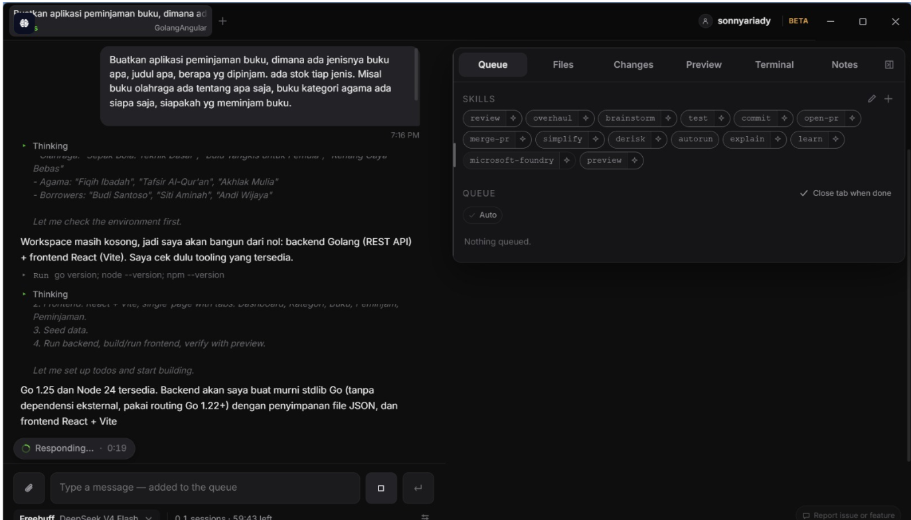
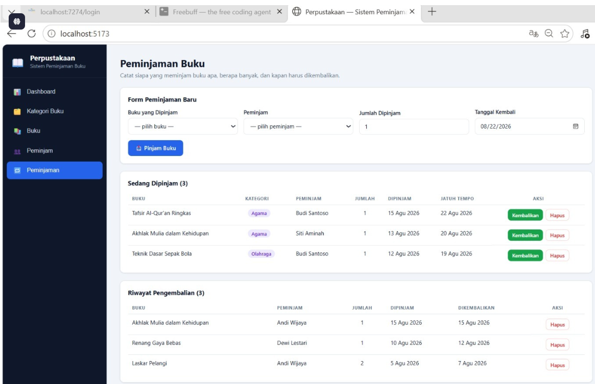
Prompt Awal Bahasa Indonesia: "Buatkan aplikasi peminjaman buku, dimana ada jenisnya buku apa, judul apa, berapa yg dipinjam, ada stok tiap jenis. Misal buku olahraga ada tentang apa saja, buku kategori agama ada siapa saja, siapakah yg meminjam buku." Freebuff mengenali lingkungan Go 1.25 dan Node 24, menyusun arsitektur REST Go stdlib, dan menyiapkan React + Vite SPA.
Initial Indonesian Prompt: Freebuff identified Go 1.25 and Node 24 in the environment, planned the REST API backend using pure Go stdlib, and initiated the React + Vite frontend workspace with local JSON data storage for rapid validation.
2. Otomatisasi CI/CD GitHub Actions & Troubleshooting Vercel 2. GitHub Actions CI/CD Pipeline & Vercel Build Troubleshooting
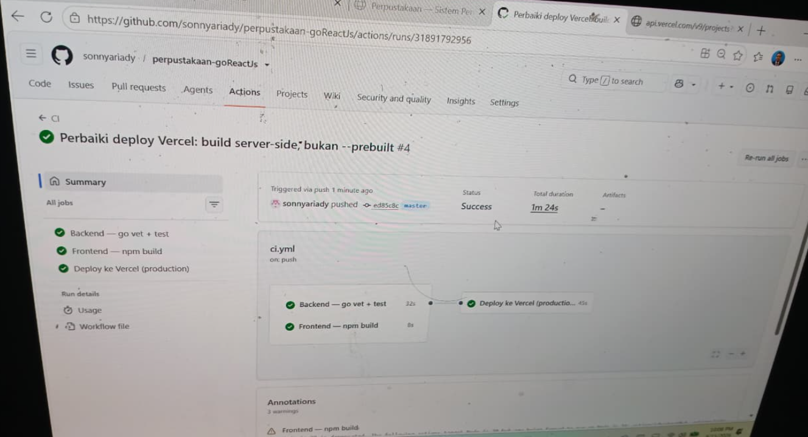
Solusi Diagnosa Log Error: Saat deployment awal gagal karena konflik flag Vercel (--prebuilt flag mismatch), pengembang memberikan log error ke Freebuff. AI mendiagnosa masalah dan memperbarui commit script ci.yml ("Perbaiki deploy Vercel: build server-side, bukan --prebuilt #4") hingga seluruh job lulus: Go backend vet & tests (32s), Frontend npm build (8s), dan Deploy to Vercel production (45s).
Log Error Diagnosis: During initial deployment attempts, the pipeline encountered build failures caused by Vercel prebuilt configuration conflicts. By prompting Freebuff with error logs, the agent diagnosed the issue and refactored the script to execute a server-side build directly on Vercel with 100% pass rate.
3. Dashboard Analitik & Manajemen Kategori Buku 3. Analytics Dashboard & Category Management
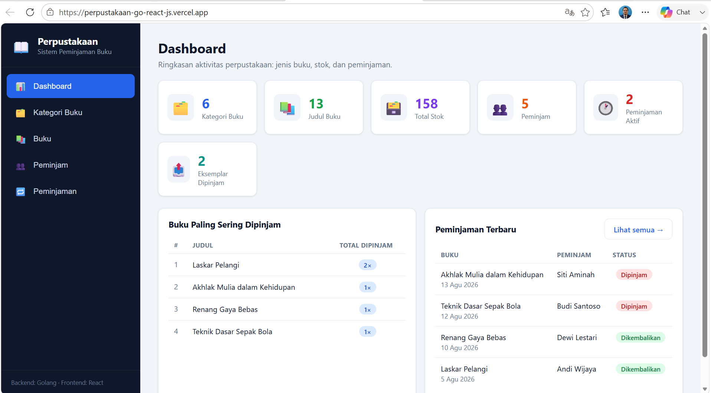
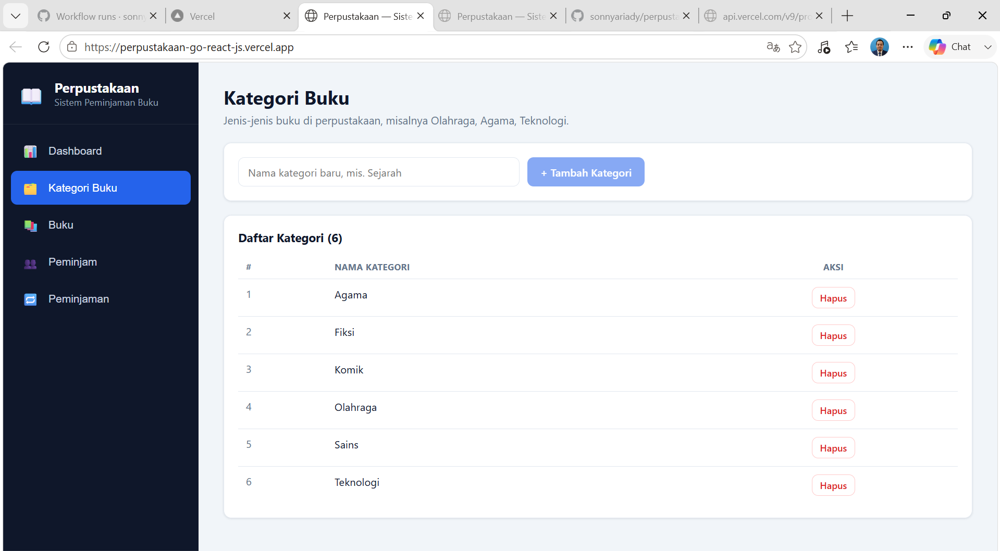
Dashboard meringkas metrik utama perpustakaan secara real-time: total kategori (6), jumlah judul buku (13), total stok barang (158), peminjam aktif (5), serta transaksi aktif (2). Fitur peringkat Buku Paling Sering Dipinjam memudahkan pemantauan buku populer.
The analytics dashboard summarizes key library metrics: total categories, total book titles, total stock inventory, active borrowers, active loan count, and most borrowed books leaderboard. Administrators can easily manage categories (Agama, Fiksi, Komik, Olahraga, Sains, Teknologi).
4. Katalog Buku & Manajemen Peminjam (Members) 4. Book Catalog Management & Member Registration
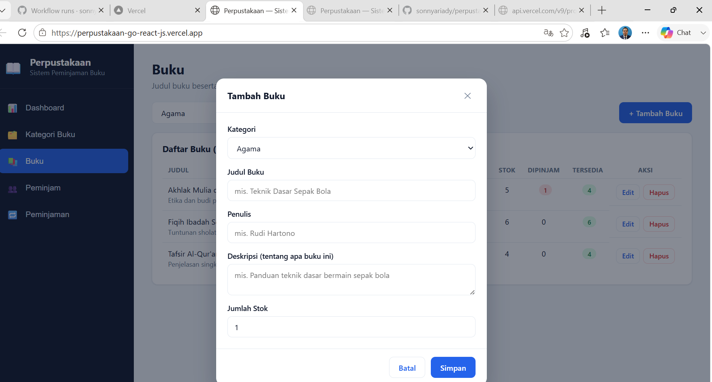
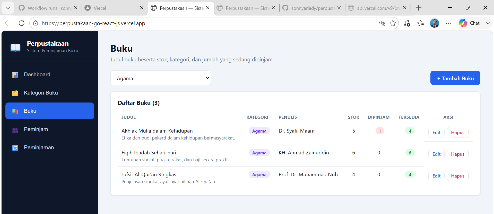
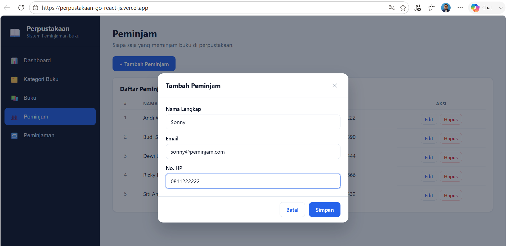
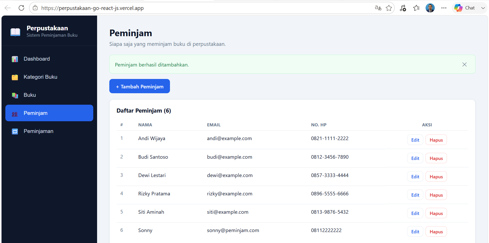
Administrator dapat menambahkan judul buku baru lengkap dengan dropdown kategori, nama penulis, deskripsi singkat, serta jumlah stok awal. Direktori peminjam dilengkapi modal pendaftaran anggota (Nama Lengkap, Email, No HP) dengan banner notifikasi konfirmasi instan.
Administrators manage book titles linked to categories and stock counters. The dedicated borrower registry allows registering library members with contact info and displays instant success feedback banners upon registration.
5. Transaksi Peminjaman & Pengembalian Buku 5. Book Loan & Return Transaction Tracking
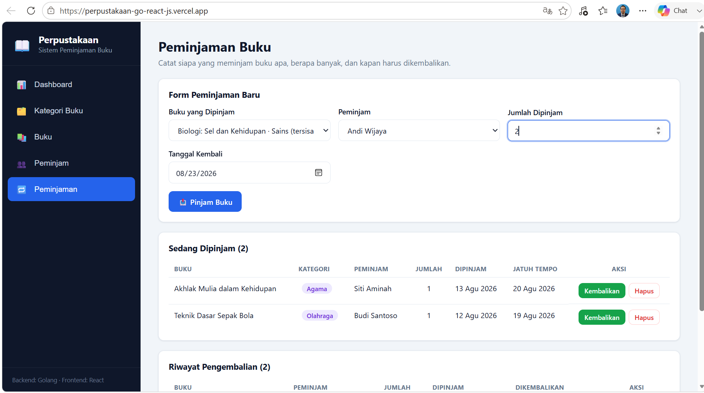
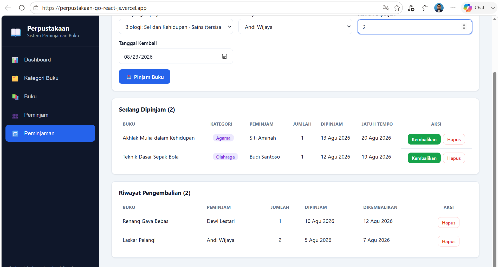
Modul transaksi memvalidasi ketersediaan stok buku secara otomatis saat memilih buku, menetapkan tanggal jatuh tempo kembali, menyediakan tombol aksi pengembalian satu klik, serta mencatat riwayat pengembalian buku secara historis.
The transaction module enforces real-time stock validation, due-date assignment, one-click return actions, and historical record keeping for completed loans.
04. Poin Pembelajaran & Wawasan Developer 04. Key Takeaways & Developer Insights
End-to-End AI Assistance
Freebuff mendukung seluruh siklus hidup pengembangan perangkat lunak—mulai dari ideasi, pembuatan kode backend/frontend, hingga refaktorisasi enkapsulasi database PostgreSQL.
Interactive CI/CD Debugging
Ketika otomatisasi build di Vercel mengalami kegagalan flag --prebuilt, pengiriman log error balik ke Freebuff menghasilkan solusi script tepat tanpa perlu trial-and-error manual.
Lightweight Go Backend
Standard library Go menyediakan HTTP REST routing berperforma tinggi tanpa overhead dependensi pihak ketiga, menghasilkan waktu eksekusi CI yang sangat cepat (32 detik).
Modern Cloud Scalability
Arsitektur terdekopel mengombinasikan Neon PostgreSQL serverless dan hosting edge Vercel memberikan skala otomatis tanpa biaya pemeliharaan infrastruktur.